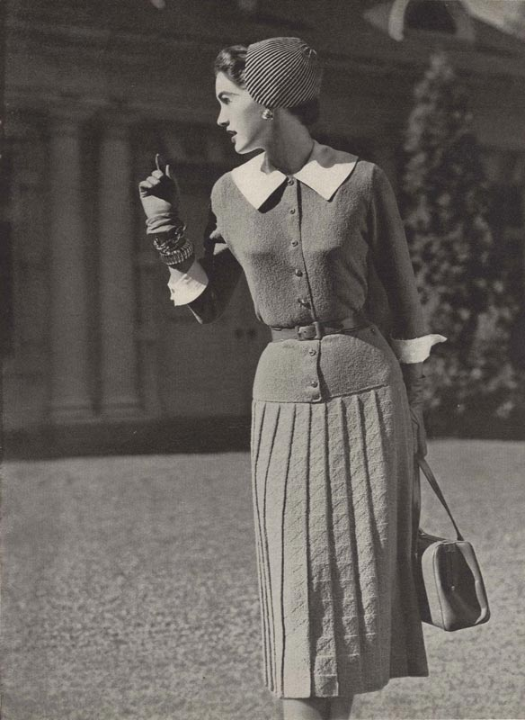
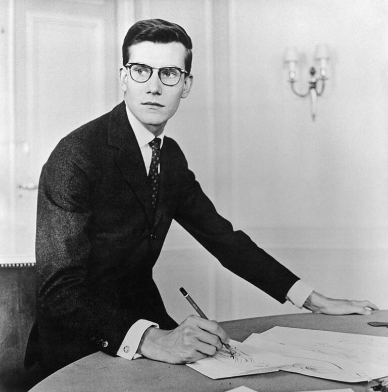

Краткая биография основателя
Будущий основатель бренда Кристиан Диор родился 21 января 1905 года в небольшом нормандском городке Гранвиль, коммуне на северо-западе Франции. Когда мальчику исполнилось шесть лет, он вместе с семьей переехал в Париж.
Его отец сколотил состояние на торговле химическими удобрениями, а мать умело тратила деньги, превращая их в удовольствия. Детство у Кристиана было безоблачным. И это несмотря на то, что он был вторым из пятерых детей.
Родители видели в ребенке дипломата, однако, судьба уготовила ему совершенно иную роль. По наставлению отца и матери Кристиан поступил в Свободную школу политических наук, но дальше этого его политическая карьера не зашла. Вместо занятий по международному праву и географии, юноша всерьез занялся изучением памятников естественной истории. Он подолгу проводил время в музеях, учился музыкальной композиции и истории живописи.
В 1928 году Кристиан вместе с другом Жаном Бонжаком открыл художественную галерею, где выставлялись работы Андре Дерена, Анри Матисса, Пабло Пикассо.
Тридцатые годы ознаменовались для Кристиана трагическими событиями: его брата признают психически больным, мать умирает от рака, отец, вложивший все свои капиталы в недвижимость, разоряется, и заболевает туберкулёзом. Чтобы справиться с ударами судьбы и уйти от депрессивного состояния, Диор в составе туристической группы отправляется в Советский Союз.
По возвращении домой он закрывает свою художественную галерею и отправляется в очередное путешествие, которое бы не состоялось без финансовой поддержки друзей. В этот раз Диор посещает Балеарские острова, где увлекается ковроткачеством и начинает создавать эскизы ковров.
В 1925 году Кристиан продает полотно французского художника Дюфи «План Парижа», которое он ранее удачно приобрел у несостоятельного Поля Пуаре. За счет полученных средств он помогает семье переехать в пригород, а сам останавливается у Жана Озенна, который работал художником в сфере моды. Постепенно Диор начинает осваивать азы этой профессии. Озенн замечает его талант и начинает предлагать эскизы Диора портным и посредникам наравне с собственными. И вот однажды ему улыбается удача: сначала покупают несколько эскизов, а затем эскизы шляпок и платьев печатают в еженедельнике Le Figaro Illustre.
В 1938 году работы юного модельера были замечены уже состоявшимся и весьма авторитетным дизайнером Робером Пиге. Следом за этим Диора призывают в армию, где он служит до 1941 года. По возвращению в Париж его принимают на работу в Модный дом Люсьена Лелонга.
Годом позже Кристиан Диор открывает парфюмерную лабораторию, которая сегодня многим известна как Christian Dior Perfume
История создания бренда Christian Dior
Официальная дата регистрации торговой марки — 16 декабря 1946 года. Именно в этот день в особняке по адресу Авеню Монтень, 30 в Париже был открыт дом моды Christian Dior.
Кто знает, как сложились бы обстоятельства, если бы не бизнесмен Марсель Буссак, который оказал финансовую поддержку молодому кутюрье.
Изначально текстильный фабрикант, который, к слову, в то время считался самым богатым человеком во Франции, надеялся на возрождение модного дома Philippe et Gaston. Однако Кристиан Диор отверг его предложение сославшись на то, что хочет работать под собственным именем. В результате они смогли договориться и прийти к обоюдному согласию.
12 февраля 1947 года увидела свет первая коллекция одежды весна-лето Christian Dior, перевернувшая представление об элегантности. Показ состоялся в одноименном модном доме. Всего было разработано 90 моделей платьев, в которых блистали 6 манекенщиц.
Первая коллекция состояла из двух линий Huit и Corolle, но вошла в историю моды как New Look («новый образ/вид/взгляд»). Этому посодействовал главный редактор Harper’s Bazaar Кармел Сноу, которая вовремя показа восторженно воскликнула: «Это нечто совершенно новое, настоящий новый взгляд!».
Первая коллекция состояла из двух линий Huit и Corolle, но вошла в историю моды как New Look («новый образ/вид/взгляд»). Этому посодействовал главный редактор Harper’s Bazaar Кармел Сноу, которая вовремя показа восторженно воскликнула: «Это нечто совершенно новое, настоящий новый взгляд!».
Дебютная коллекция Christian Dior произвела переворот в мире послевоенной моды и возродила модную индустрию Франции. В отличие от бренда Chanel, который в тот период переживал не лучшие времена, Christian Dior купался в лучах славы. Пышные платья с новым вариантом кринолина, узкой талией и прилегающим лифом произвели настоящий фурор среди публики. В этом же году линия Huit была отмечена престижной наградой, сопоставимой с «Оскаром» в кинематографе.
Новый образ стал чрезвычайно популярным, его силуэт с пышной юбкой оказал влияние на других модельеров вплоть до 1950-х годов. О бренде заговорили в США, наряды Christian Dior начали носить голливудские звезды и европейская знать. Особую популярность он приобрел в Западной Европе, где превозносился как освежающее противоядие от строгости военного времени и де-феминизированной формы.
Однако не все были довольны новым веянием в моде. Некоторые считали такое количество материала расточительным. Своего негодования не скрывали феминистки, которых не устраивало буквально все: корсеты для талии, мягкие бюстгальтеры, тяжелые юбки. В результате было сформировано несколько протестантских групп, включая «Лигу разорившихся мужей». В ней насчитывалось около 30 000 человек, которые объединились, чтобы заявить, что они против расходов, связанных с количеством ткани, необходимой для таких проектов.
Dior — глобальная экспансия
В 1948 году состоялся первый показ Christian Dior за границей в Сиднее (Австралия). Следом за этим открывается первый модный бутик в Нью-Йорке по адресу Пятая Авеню, 730. В этом же году состоялся показ новых линий Zig-Zag, Envol, Ailee.
В 1949-м Кристиан Диор создает еще две линии одежды Trompe-L’Oeil и Milieu du Siècle, а также выпускает новый аромат Diorama.
К концу 1949 года на долю Dior приходилось 75 % экспорта модной одежды Парижа и 5 % всей экспортной выручки Франции.
В этот же период Дуглас Кокс из Мельбурна, Австралия, отправился в Париж, чтобы встретиться с Кристианом Диором, чтобы обсудить возможность создания произведений Диора для австралийского рынка. В результате был подписан контракт, по условиям которого французский кутюрье разрабатывает оригинальные проекты, а Дуглас Кокс на их основе создает одежду в своей мастерской в центре модного района Флиндерс-Лейн.
С этих пор почти ежедневно название компании Douglas Cox появлялось на первых полосах австралийских газет. Соглашение между Dior и Douglas Cox действительно вывело австралийское шитье на мировую арену, но в конечном счете 60 моделей Dior оказались слишком авангардными для консервативного австралийского вкуса. Дуглас Кокс не смог продлить контракт после единственного сезона 1949 года, сделав вещи от Dior-Cox одними из самых редких коллекционных предметов в австралийской моде.
В 1951 году Кристиан Диор шьет свадебное платье для принцессы Ираны Сорайи Исфандияри-Бахтиари и становится автором книги «Я — кутюрье». Параллельно этому состоялось дефиле в Греции.
Несмотря на огромную популярность Dior в Европе, к этому времени более половины выручки приносили Соединенные Штаты.
В 1952 году в Лондоне была создана Christian Dior Models Limited.
В 1953-м совместно с Роже Вивье Кристиан Диор запускает линию обуви, которая изготавливается по индивидуальным меркам. В этом же году открывает первый монобрендовый бутик в Каркасе и поступает в продажу первая губная помада дома — Rouge Dior. К концу 1953 года компания прочно обосновалась в Мексике, на Кубе, в Канаде и Италии.
В 1954 году в честь ее королевского высочества Великобритании принцессы Маргарет и герцогини Мальборо в Блемхейнском дворце Dior организовал зрелищный показ. Помимо этого в латинской Америке была организована серия дефиле.
В середине 1950-х годов в компании работало около 1500 человек. Между 1954 и 1957 годами Christian Dior запустил несколько успешных модных линий, среди которых линия Libre и Arrow. Тем не менее, ни одна из них не вызвала широкий общественный резонанс, близкий к глубокому эффекту New Look.
В 1955 году состоялось открытие модного бутика на углу Авеню Монтень и улицы Франциска I в Париже.
К моменту 10-летия компании было продано 100 000 предметов одежды.
Dior — великая империя моды после смерти основателя
После внезапной смерти Кристиана Диора, ведущим модельером дома был назначен 21-летний Ив Сен-Лоран, пришедший в компанию еще в 1953 году. Уже тогда талант молодого человека был замечен Кристианом Диором, и с 1955 по 1957 Лоран был его главным ассистентом.
В 1958-м Марк Боан возглавляет лондонское отделение Christian Dior. В этом же году выходит в свет первая коллекция Сен-Лорана Dior Trapeze. В каждой модели ощущался дух его протеже: идеальный крой и пропорциональность, изысканные ткани. Но, в отличие от своего наставника, молодой дизайнер сделал наряды более мягкими и воздушными, вследствие чего их было гораздо удобнее носить. Коллекция дышала свежестью и произвела настоящий фурор, а Лорана провозгласили национальным героем.
Воодушевленный успехом, молодой кутюрье начинает экспериментировать. В результате его проекты становятся более смелыми, авангардными. В 1960 году он представил коллекцию, навеянную субкультурой Битников (Beatniks или The Beats).
В 1962 на прилавках появился первый гель для ногтей Dior, 1963 был выпущен парфюм Diorling, а в 1966 году первый мужской аромат Eau Sauvage.
Годом позднее Марк Боан создает платье для коронации императрицы Ирана. Параллельно этому состоялось открытие подразделения Baby Dior и открытие одноименного бутика на Авеню Монтень, 28.
В 1968 году была выпущена скоординированная вязаная линия Christian Dior, во главе которой стал Фредерик Касте. В этом же году Dior Parfums был продан Moët-Hennessy, которую в скором поглотит компания LVMH (в связи с банкротством Буссака). Однако, это не повлияло на деятельность Дома Dior, и уже в 1969-м Christian Dior Cosmetics выпустила первую коллекцию для макияжа.
В 1970 году выпускается первая линия одежды Christian Dior Homme, а также первая линия одежды для мужчин Christian Dior Monsieur.
В 1972 были выпущены духи Diorella, меховая коллекция Christian Dior была создана во Франции в 1973 году, а затем выпускалась по лицензии в США, Канаде и Японии.
Первые часы Dior Black Moon были выпущены в 1975 году в сотрудничестве с лицензиатом Benedom.
В 1976 Марк Боан создает свадебное платье для ее Величества королевы Швеции Сильвии.
В 1978 году группа Буссака подала заявление о банкротстве, и поэтому ее активы (включая активы Christian Dior) были приобретены Willot Group по разрешению Парижского торгового суда.
В 1979 году был представлен парфюм Dioressence, а затем, годом позже, мужской аромат Jules.
В 1981 году по случаю бракосочетания леди Дианы Спенсер и Его Королевского Высочества принца Уэльского, которое состоялось 29 июля, Марк Боан создает платья для Ее Светлости княгини Монако Грейс, Ее Величества королевы Югославии Александры и леди Памелы Хикс. В этом же году руководство Willot Group объявило о банкротстве. Долго не думая в декабре 1984 года Бернар Арно и его инвестиционная группа приобрели компанию за один символический франк.